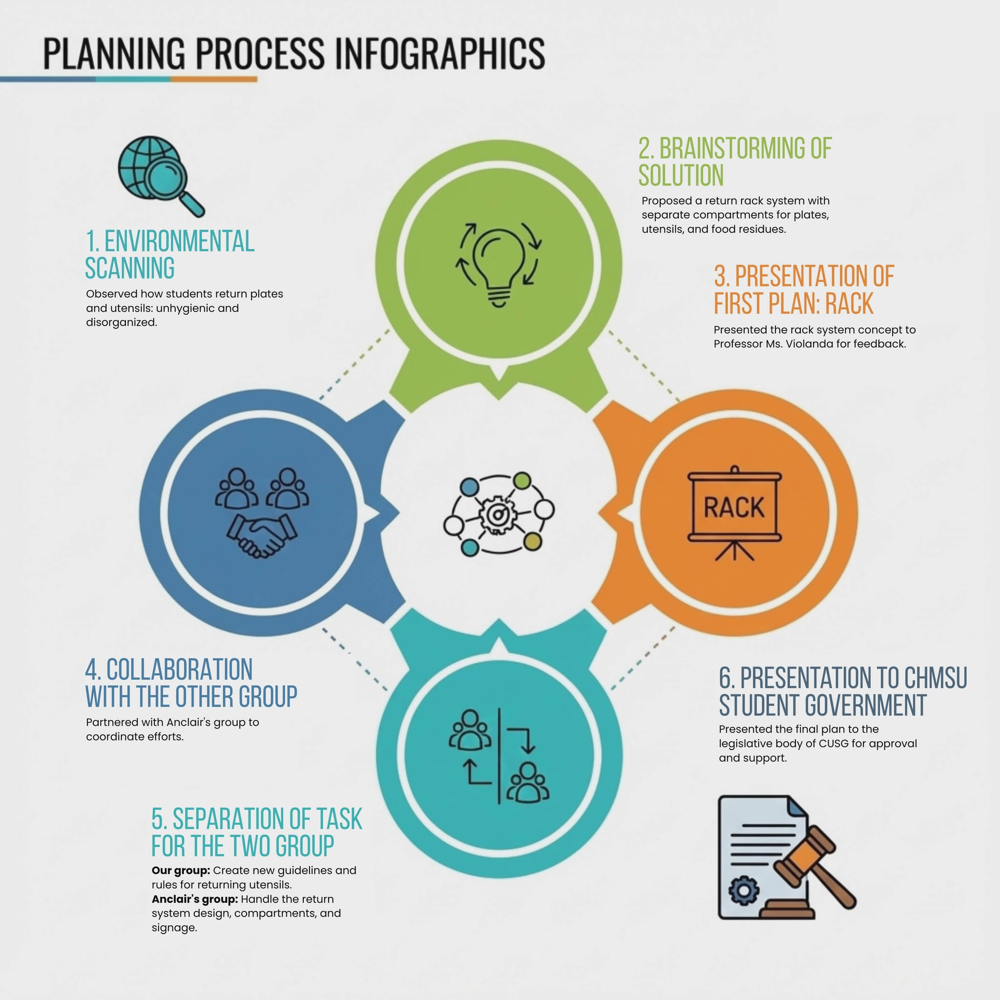

The Greening Plato Project
Hygiene, discipline, and shared responsibility in everyday campus life.
Objectives and Intended Outcomes
Our environmental scanning revealed that students returned used plates, utensils, and food residue in a single container without proper separation. This led to unhygienic conditions and inconvenience for cafeteria staff. The situation reflected a lack of structured guidance in a shared institutional space.

Justification for Choosing this Project
The project supported SDG 3: Good Health and Well-Being by promoting sanitation and preventing contamination, and SDG 12: Responsible Consumption and Production by encouraging proper waste segregation and responsible use of resources. As well as SDG 17: Partnership for the Goal, through collaboration with the CHMSU University Student Government (CUSG).
Timeline and Scope of Activities
Project Observation Phase:
Conducted environmental scanning of the CHMSU cafeteria to document existing conditions and practices, with a focus on the plate return system.
Issue Identification
Analyzed current plate return practices and identified operational and sustainability-related issues.
Proposal Development:
Developed structured recommendations under the Greening Plato Program based on gathered observations and analysis.
Formal Presentation:
Presented the finalized proposal to the CHMSU University Student Government (CUSG) for evaluation and consideration.
Project Limitation:
Project concluded at the proposal stage; implementation and resolution approval were dependent on CUSG and relevant university offices and were beyond the group’s authority.
Project Infographic
